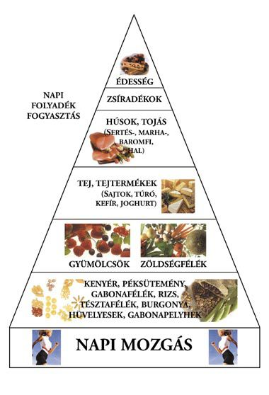

Az egészséges étrend alapját a változatos és kiegyensúlyozott étkezés adja. A táplálkozási piramis segít eligazodni abban, hogy milyen típusú ételeket milyen arányban fogyasszunk.

A főbb tápanyagok szerepe
Szénhidrátok: A szervezet elsődleges energiaforrása. Ide tartoznak a teljes kiőrlésű gabonák, gyümölcsök és zöldségek.
Fehérjék: Az izomzat, szövetek és sejtek építőanyaga. Találhatóak húsban, halban, tejtermékekben és hüvelyesekben.
Zsírok: Az egészséges zsírok (pl. olívaolaj, diófélék, avokádó) fontosak az idegrendszer működéséhez.
Vitaminok és ásványi anyagok: Elengedhetetlenek az immunrendszer erősítéséhez és a test megfelelő működéséhez. Friss zöldségek és gyümölcsök tartalmazzák.
Az étkezések gyakorisága
Egy egészséges napi étrendben 4-5 kisebb étkezés ajánlott. Ez segít stabilizálni a vércukorszintet, és elkerülhető a túlzott éhségérzet, ami túlevéshez vezethet.
Vízfogyasztás
A megfelelő hidratáció elengedhetetlen. Naponta legalább 2-3 liter vizet ajánlott inni, de az egyéni szükséglet a testsúlytól, aktivitástól és időjárástól függ.